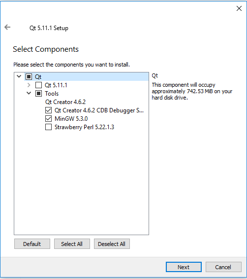
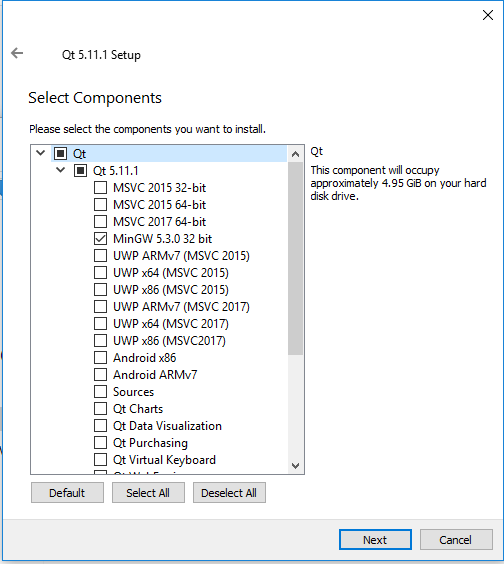
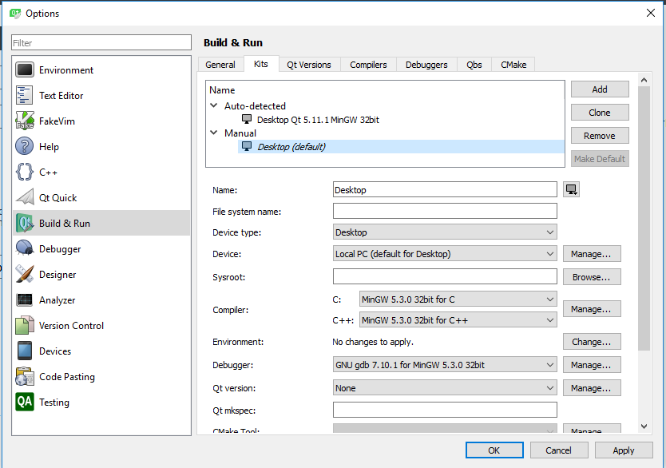

1. Download Qt creator for Windows from the official Qt page (it is a large file, so please be patient).
2. Start the setup process by clicking on the downloaded exe file and follow the onscreen instructions. Note: You may need to configure your proxy settings to proceed with the installation steps.
3. On the screen to select the components, select them as indicated in the following images:


4. Once installed, click on "Tools/Options" and ensure that you have configured the "Build and Run" tab like this:

5. Download Java from this official page and install it.
6. Download the simple-project.zip from the course webpage and unzip it somewhere.
7. Open Qt creator and go to the menu item for "Open file or project", point to the simple-project directory, and click on "Configure project".
8. In the source tree. Sources/src/hello.cpp contains the sample hello.cpp (Hello world code). You can add another cpp file to this folder, but there should only be one main() functions. Just rename the one of the main() as main_old() or something of your choice.
9. Modify this file as per the lab requirements. It will be able to use all the files in the stanfordlib folder.
10. Ctrl+B to build and Ctrl+R to run. Please note that the first run will take time as it will build the library.